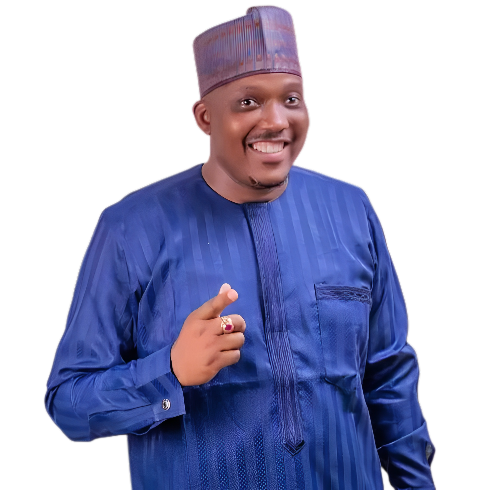

Hakeem Lawal

EARLY LIFE:
Born on the 28th day October,1974 to a Navy-officer father and raised by a palm oil-merchant grandmother at his ancestral home in Idi Ape.
Lawal was taught to always have other people in mind and make their happiness his own happiness, and this has been one of his frontline principles, hence, his strong connection to the locals.
As the first son of a very prominent and influential former Governor of Ogun and Kwara states, and like his father, the Late Rear Admiral Mohammed Alabi Lawal, he believes strongly in the principles of probity, fear of God, discipline and spirituality and tries in his own way to spread this message.
EDUCATIONAL EXPERIENCE:
Lawal is a homegrown politician, his first foray into education was at Chapel Primary School, a Kwara state government owned school in Ilorin, and when the common entrance examination board could not ignore his striking brilliance, he was granted scholarship into the prestigious Barewa College, Zaria.
The United Kingdom was the next port of call where he had his GCSE and A-LEVELS at the Royal Russell School (UK), he proceeded to the University of Portsmouth (UK) where he bagged a BA. (Hon) Economics degree.
Subsequently, he moved to the University of Surrey for his postgraduate studies, where he obtained a masters degree in International Finance. He is also an ACCA certified chartered accountant.
WORK EXPERIENCE:
As a chartered accountant, his experience traverses the power sector, tax and finance, developmental economics, real estate development, amongst others. He has also worked in bluechip companies in the UK, before setting up his own company. These experiences will no doubt play prominent roles in delivery of sustainable development should he be elected as the next Governor of the state.
Lawal is not without public sector experience, as he was the Chairman; Finance Committee of the Citizenship and Leadership Training Centre under the Federal Ministry of Youth Development between 2007 to 2011.
At the board, he was in charge of effecting efficient budgeting, and the implementation and monitoring of contract award processes. He was also in charge of ensuring strict adherence to financial and capital project policies, among other sundry duties.
POLITICAL EXPERIENCE
Lawal was the treasurer of the 1998 Governorship campaign and had previously attempted to govern the state in 2014 and 2018 under opposition People’s Democratic Party (PDP) and All Progressives Congress (APC) respectively, before he was recently elected as the Governorship candidate of the Social Democratic Party (SDP).
PHILANTROPY:
Through Awliya Foundation, a charitable organization he founded in memory of his late dad, Admiral Mohammed Alabi Lawal, he awarded fully funded scholarships to about 100 students at the Pan African College of Education in Offa, Kwara state and also awarded fully funded scholarships to about 125 students at the Adewale Ibrahim College of Health Sciences, Buari, at an event organised by the Ilorin Emirate Youth Development Association (IEYDA).
Still on education, Hakeem awarded scholarship to students of the University of Ilorin Faculty of Law, to cover their tuition fees throughout their stay in school. Sizable number of people have also benefitted from postgraduate scholarship awards of Lawal.
The aforementioned notwithstanding, is exclusive of Lawal’s sponsorship of hundreds of pupils at elementary schools, annual sponsorship of West African Examination Council (WAEC) examinations and Joint Admission and Matriculation Board (JAMB) examinations of indigent students, among others.
To provide succor to Kwarans who suffers scarcity of water across the State, Lawal has personally funded drilling of quite a number of boreholes in areas like Kuntu in Adewole ward (Ilorin West), Amule in Ibagun (Ilorin East), Ile Ishowo in Popo Giwa (Ilorin West), Oju ekun (Ilorin West), Magaji Aare (Ilorin East), Otte in Asa (Asa), Ogun-Edun (Moro), and some other parts have benefited from his benevolence, this is asides of the provision of solar powered streetlights to some areas.
With the knowledge that firsthand access to medical care in the state is limited, especially for people in the rural areas and suburbs, Lawal procured two (2) Mercedes Benz ambulances for Awliya foundation, this is to serve the purpose of a mobile health clinic, aid medical outreaches, and also to aid improved ambulance service for emergency cases.
Over the years, Lawal has remained committed to his social responsibilities, through the Alasa Traders’ Forum business stimulation grants, he has empowered hundreds of traders and smallholder business owners who are often confronted with the inability to sustain their enterprise due to lack of money management skills, record keeping, inadequate saving habit and restricted access to funds.
FAMILY LIFE:
Like the saying goes, “behind any successful man is a diligent woman”, family members, friends and even perceived enemies will boldly say this statement is true when taking a look at the wife of this man.
Habiba is her name and she is one strong pillar behind her husband. You can simply describe her as pretty and charming with an ever-present and reassuring smile. As the woman of the house and the homemaker, Habiba has demonstrated several times that African women are the best created on earth.
AWARDS: